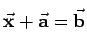

Inhalt Index DeskTop Bronstein

 Geometrie Vektoralgebra und analytische Geometrie Vektoralgebra
Geometrie Vektoralgebra und analytische Geometrie Vektoralgebra


Die einfachsten vektoriellen Gleichungen sind in der folgenden Tabelle zusammengestellt. Darin sind  die bekannten Vektoren;
die bekannten Vektoren;  der gesuchte Vektor; die bekannten Skalare und x,y,z die gesuchten Skalare.
der gesuchte Vektor; die bekannten Skalare und x,y,z die gesuchten Skalare.
| Gleichung | Lösung |
| 1.  | |
2.  |
|
| 3. | Die Gleichung ist unbestimmt; trägt man alle Vektoren , die dieser Gleichung genügen, von einem Punkt aus ab, so liegen ihre Endpunkte auf einer Ebene, die auf dem Vektor |
| 4. | Die Gleichung ist unbestimmt; trägt man alle Vektoren , die dieser Gleichung genügen, von einem Punkt aus ab, so liegen ihre Endpunkte auf einer dem Vektor |
5.  |
|
| 6. | wobei , , die zu |
| 7. | |
| 8. |  |